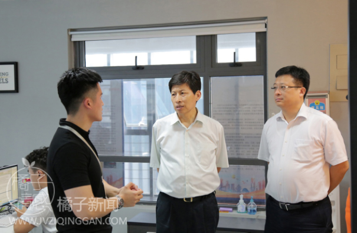
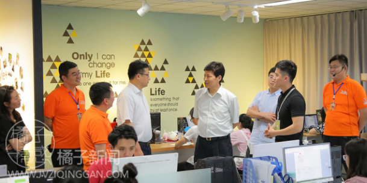

官方二维码
免费情感热线电话
4006-299-520

官方二维码
免费情感热线电话
4006-299-520

青岛市市南区区长高健在青岛市人力资源和社会保障局局长纪敏的陪同下，参观了橘子情感的工作环境。橘子情感的工作人员们对两位领导的到来十分激动，也对两位领导的关怀倍受感动。
青岛市市南区区长高健在听取了橘子创想创始人嘉伟对公司业务情况的介绍之后，得知这是一家主要针对挽救婚姻、、挽回爱情、解决单身问题的大型互联网公司，高健区长对公司业务内容表示大力赞赏。
橘子创想的创始人嘉伟在创业初期敏锐的发觉现今社会恋爱分手率高、婚姻不稳定等问题，于是联合几位志同道合的行业专家，怀揣梦想开始创业，成立了专门解决恋爱分手问题、婚姻问题的新型公司。通过持续努力，已经为上万人解决了恋爱及婚姻中出现的问题。
高健区长指示道：“现今社会，婚姻问题是影响国民幸福指数的重要因素，解决单身问题、挽救婚姻状态的企业应运而生，这对维持社会稳定起到了十分重要的作用。随着科技的发展，互联网行业是未来公司发展的大势，能抓住机遇，敢做弄潮儿才能够在企业激烈的竞争中立于不败之地。”
橘子情感发展十分迅速，仅仅几年时间，公司就由三五人的创始团队发展到了上百人，解决了上百人的就业问题，尤其是其中包含了部分刚毕业的大学生，这让人力资源与社会保障局局长纪敏十分满意。
纪敏局长与橘子情感的普通员工进行了亲切的交流，询问了外地员工的住宿问题、保险问题等与员工息息相关的问题，在得到满意的答复之后，高敏局长的脸上露出了欣慰的笑容。
纪敏局长赞扬道：“当前的就业形势十分严峻，尤其是大学生就业难问题，需要各方面共同努力。你们能接纳刚毕业的大学生进入公司，这点很好，为解决就业难问题做出了贡献。年轻人在创业的时候就要将个人价值与社会价值统一起来，你们做的很好。”
创始人嘉伟表示：“两位领导的参观与鼓励对公司有重要意义。这是对我们这个团队的肯定，对这种新型行业的肯定。这意味着我们一直以来摸索的道路是正确，对社会是有正面意义的。”